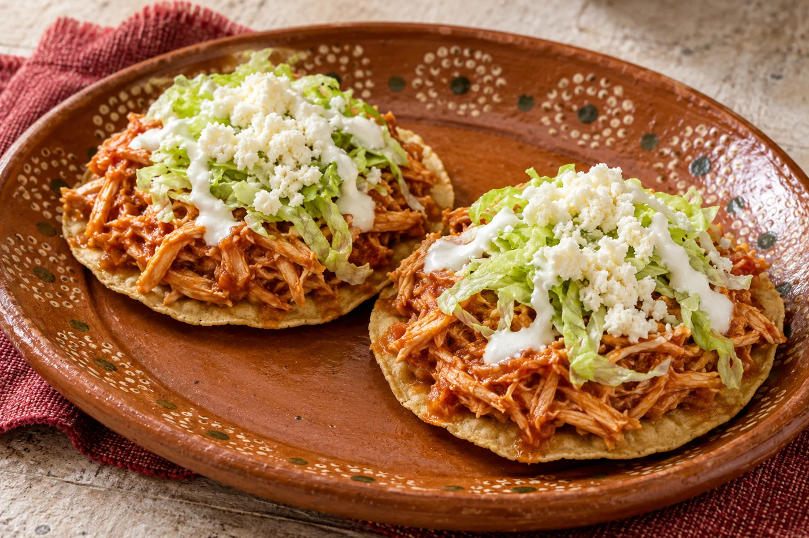
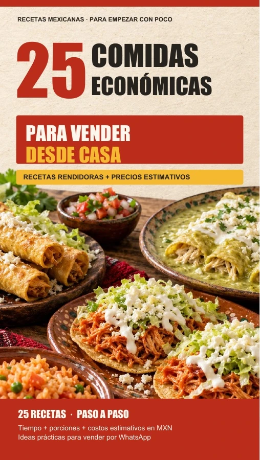
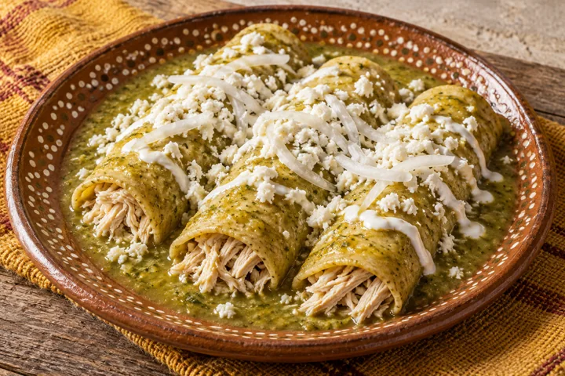
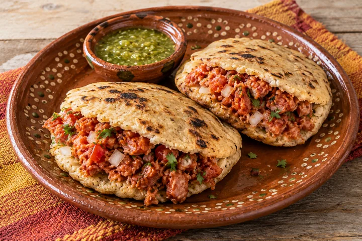
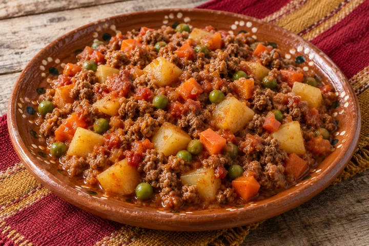
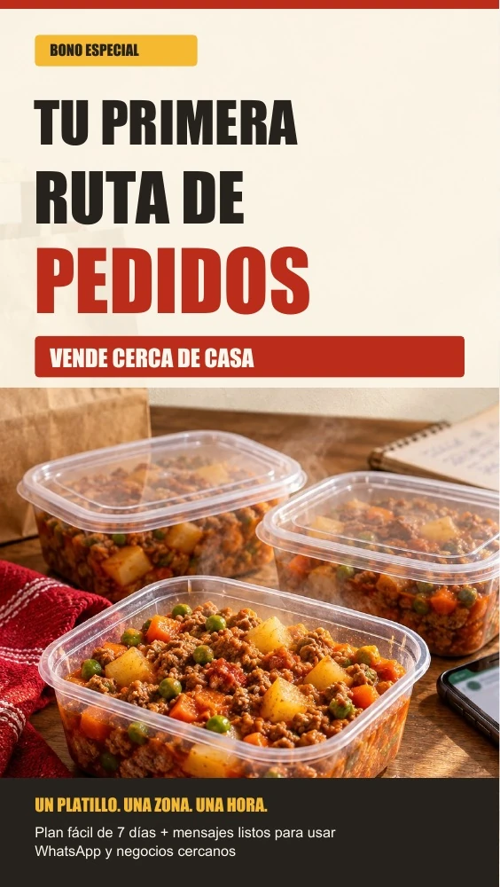

01 / ANTOJITOS
Tostadas de tinga
6 porciones · 60 min aprox.
Prepara comida que se antoja. Aprende a ponerle precio y a ofrecerla por WhatsApp o cerca de casa.
2 PDF en español de México · Para leer en tu celular

¡ASÍ DE RICO PUEDE SER TU MENÚ!

Hecho en casa.Antojitos y guisos que puedes preparar por lote.
Elige uno, prueba tu receta y abre pedidos.
6 porciones · 60 min aprox.
6 órdenes · 65 min aprox.

6 órdenes · 55 min aprox.

6 porciones · 50 min aprox.
Mueve las opciones y mira cómo cambia el ejemplo.
Porción sin guarnición
SIMULACIÓN ESTIMATIVA · No es una promesa de ingresos.
6 porciones × 3 entregas × $22.50 de ganancia bruta
Cómo leerlo: supone vender todas las porciones a $65 y escalar proporcionalmente el lote de 6: $215 de ingredientes + $40 de empaque y energía. Los costos varían por región, marca, empaque y canal. La ganancia bruta todavía no descuenta tu trabajo, reparto, comisiones ni impuestos. Actualiza el ejemplo con tus costos reales.
Un plan de 7 días para organizar tu primera prueba. Sin tener que empezar con un local.
¡Hola! Mañana tendré picadillo casero 🍲
Porción: $65.
Entrego de 1 a 2 p. m. en [zona].
¿Te aparto una porción?

UN PLATILLO.Todo lo importante, a la vista. Sin perderte entre explicaciones largas.
Sin mensualidades. Sin suscripción.
Producto digital. Consulta las condiciones de pago y acceso en el checkout.
Puedes comenzar con una prueba pequeña desde casa. Elige una receta, revisa el equipo necesario y confirma tus costos. El bono explica cómo ofrecerla cerca de ti y organizar los pedidos.
Depende de tus costos, demanda y ejecución. Los números son ejemplos estimativos, no ingresos garantizados. Descuenta también tu trabajo, reparto, comisiones e impuestos para conocer tu utilidad neta.
No. Empieza con una o dos que puedas preparar bien. Las 25 opciones te ayudan a elegir según tu presupuesto, equipo y clientes.
El recetario de 56 páginas y el bono Tu Primera Ruta de Pedidos, de 14 páginas. Son dos PDF en español mexicano. Consulta el checkout para conocer las instrucciones de acceso.